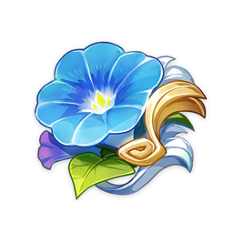

Genshin Impact · Versión 7.2
Análisis del Rol y Escalado
Alhacén (Alhaitham) es un personaje de elemento Dendro originario de Sumeru que utiliza Espada Ligera y se posiciona en el tier T2 (B) Main DPS dentro del rol de Hypercarry Dendro en Campo (Lluvia de Espadas de Espejos Chisel-Light). Su rendimiento en combate gira en torno a este eje principal: Escalado Dual: Maestría Elemental (Mayor peso pasiva A4) + ATQ%.
Para maximizar su aporte en el equipo, la configuración prioritaria combina Clorofilo Refulgente con el conjunto de artefactos Sueños Áureos (4 piezas), respetando la jerarquía de estadísticas 1. Prob. Crítica / Daño Crítico (1:2) > 2. Maestría Elemental (250 – 400 EM) > 3. Recarga de Energía% (120% – 135% ER) > 4. ATQ% y subiendo sus habilidades en orden: Habilidad Elemental (E - Espejos) = Ataque Normal > Definitiva (Q).
Mejores Armas
Opciones recomendadas ordenadas por rendimiento según el meta actual y compatibilidad con sus rotaciones:
-
 Clorofilo Refulgente ★★★★★Opción por rol+88.2% Daño Crítico, +4% CR y convierte Maestría Elemental en enorme daño plano para normales y E.
Clorofilo Refulgente ★★★★★Opción por rol+88.2% Daño Crítico, +4% CR y convierte Maestría Elemental en enorme daño plano para normales y E. -
 Cortador de Jade Primordial ★★★★★Opción por rolStat-sticks de Crítico y ATQ masivos.
Cortador de Jade Primordial ★★★★★Opción por rolStat-sticks de Crítico y ATQ masivos. -
 Reflejo de las Tinieblas ★★★★★Opción por rol+44.1% Daño Crítico y hasta +40% Bono Daño Elemental en ataques normales.
Reflejo de las Tinieblas ★★★★★Opción por rol+44.1% Daño Crítico y hasta +40% Bono Daño Elemental en ataques normales. -
 Espina de Hierro ★★★★Opción por rolForja y evento gratuitos con +165 de Maestría Elemental y daño elemental.
Espina de Hierro ★★★★Opción por rolForja y evento gratuitos con +165 de Maestría Elemental y daño elemental. -
 Diluvio Florífero ★★★★Opción por rolArma de evento gratuita con +165 ME y +32% daño sobre el objetivo marcado.
Diluvio Florífero ★★★★Opción por rolArma de evento gratuita con +165 ME y +32% daño sobre el objetivo marcado.
Mejores Sets de Artefactos
Combinaciones de 4 piezas o mezclas de 2 piezas para maximizar su contribución:
-
 Sueños Áureos (4 piezas) BiS Indiscutible
Sueños Áureos (4 piezas) BiS Indiscutible+Hasta 230 de Maestría Elemental y +14% ATQ continuo en combate.
-
 Recuerdos del Bosque (4 piezas) Solo si va Solo Dendro
Recuerdos del Bosque (4 piezas) Solo si va Solo Dendro-30% RES Dendro si ningún compañero del equipo puede llevar este set.
-

2p EM+80 + 2p Dendro+15% Alternativa 2p+2pExcelente alternativa con buenos substats de crítico.
Estadísticas Principales y Secundarias
Atributos prioritarios en artefactos para un balance óptimo de daño o soporte:
| Pieza | Estadística Principal |
|---|---|
| Reloj (Arenas) | Maestría Elemental |
| Cáliz | Bono Daño Dendro% |
| Corona | Prob. Crítica% / Daño Crítico% |
Prioridad de Subestadísticas
- 1. Prob. Crítica / Daño Crítico (1:2)
- 2. Maestría Elemental (250 – 400 EM)
- 3. Recarga de Energía% (120% – 135% ER)
- 4. ATQ%
Prioridad de Talentos
Habilidad Elemental (E - Espejos) = Ataque Normal > Definitiva (Q)
Objetivos de Estadísticas (Nivel 90)
Las metas numéricas exactas de Alhacén (Alhaitham) varían según el arma equipada, los refinamientos y la generación de partículas de su equipo.
Prioriza cumplir primero la Recarga de Energía necesaria para mantener la rotación fluida de su Habilidad Definitiva antes de buscar subestadísticas ofensivas adicionales.
Con piezas principales de Maestría Elemental, Bono Daño Dendro% y Prob. Crítica% / Daño Crítico%, enfoca tu farmeo de artefactos en: 1. Prob. Crítica / Daño Crítico (1:2) > 2. Maestría Elemental (250 – 400 EM) > 3. Recarga de Energía% (120% – 135% ER) > 4. ATQ% (Escalado Dual: Maestría Elemental (Mayor peso pasiva A4) + ATQ%).
Talentos de Combate y Materiales (Nivel 1 al 10)
Habilidades principales de Alhacén (Alhaitham) y desglose exacto de libros, materiales y Mora para mejorar sus talentos:


Composiciones de Equipo Recomendadas
Alineaciones con mayor sinergia elemental y amplificación de daño en el Abismo y Teatro Fantasía:
Materiales de Ascensión (Nivel 1 al 90)
Recursos totales requeridos para desbloquear las 6 fases de ascensión de Alhacén (Alhaitham). Coste total de Mora en ascensiones: 420.000 Mora.


Sinergias y Guías Relacionadas
Explora las fichas de armas, artefactos y materiales de los principales compañeros de equipo para Alhacén (Alhaitham):